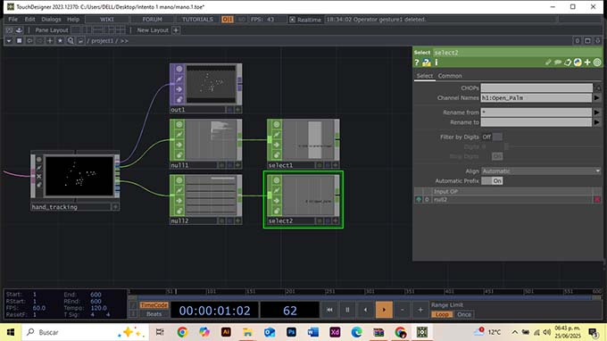
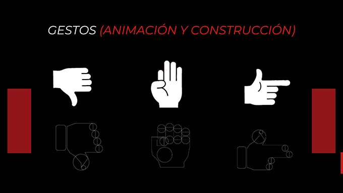
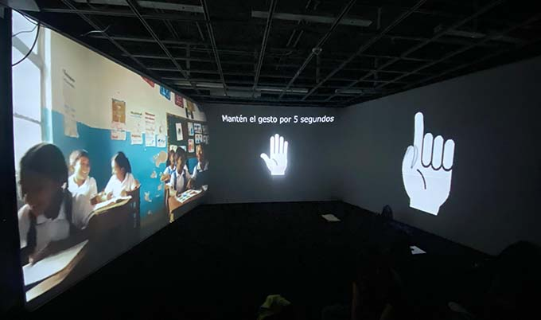
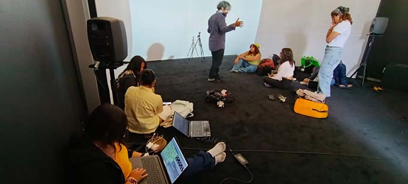
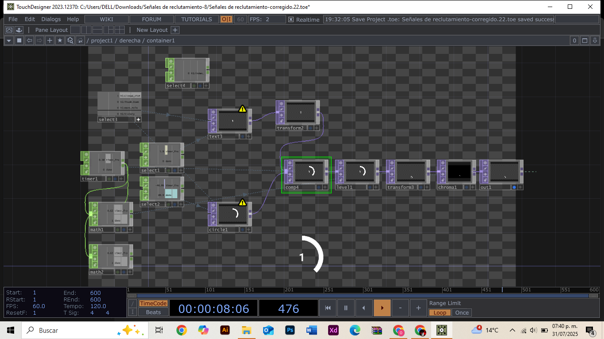

Autores: Osvaldo Daniel Gutierrez Garcia
/ Abraham Mejia Angeles
/ Roberto Segundo Silvestre
Año de realización: 2025
Formato: Instalación interactiva digital de tres canales,
por medio de detención de gestos con las manos.
Concepto
“Señales del reclutamiento” es una videoinstalación de arte interactivo de tres canales
que explora el fenómeno del reclutamiento infantil por parte del narcotráfico en México,
una problemática de alto impacto social. La obra visibiliza las condiciones sociales,
económicas y familiares que colocan a muchos niños en situación de vulnerabilidad,
atrayéndolos con promesas de respeto, dinero o una mejor vida.
A través de testimonios reales y recursos audiovisuales, la instalación propone una
experiencia sensible y crítica. El espectador activa videos mediante gestos con la mano,
revelando cómo el deterioro del entorno, la violencia implícita y la falta de oportunidades
influyen en decisiones forzadas. La violencia no se muestra de forma explícita, sino a
través de lo simbólico: el vacío, la repetición y el desgaste.
Cómo se hizo
Organización: Se trabajó en fases: ideación, prototipado, desarrollo,
pruebas, y presentación. Cada integrante asumió roles específicos en programación, arte sonoro
y montaje visual.
Desarrollo: Se empleó TouchDesigner para...
Software usado: TouchDesigner, Gemini, Premiere
Proceso




Etapa 1: Desarrollo Audiovisual
Creación de videos conceptuales con IA
Se utilizaron prompts en la plataforma Gemini para generar
videos con una estética simbólica que representara los contextos clave del
reclutamiento infantil: hogar, escuela y calle. Estas piezas exploran visualmente
la descomposición del entorno y las emociones que enfrentan los menores.
Video generado con IA en Gemini para representar el entorno del hogar
deteriorado.
Integración de testimonios en Premiere Pro
Con Premiere Pro se integraron textos basados en testimonios reales
que acompañan a las imágenes generadas. La tipografía y su aparición progresiva
buscan generar empatía y reflexión sin recurrir a la violencia explícita.
Textos superpuestos a los videos en Premiere, basados en testimonios
reales.
Aplicación de efectos visuales (glitch)
Se aplicaron efectos de glitch y distorsión visual para simbolizar el colapso emocional, el trauma y la pérdida de estabilidad que rodean el reclutamiento infantil. El recurso visual también representa la ruptura de la infancia.
Fotograma alterado con glitch que representa el vacío y la fragmentación emocional.
Búsqueda e integración de sonido
Se trabajó el diseño sonoro con recursos libres y generación de audio por IA,
utilizando sonidos ambientales sutiles, para acompañar emocionalmente cada
escena sin ser explícitos.
Diseño sonoro con pistas de audio para acompañar cada entorno de forma simbólica.
Voz del narrador
Finalmente, se integró una voz en off como hilo conductor de cada pieza,
con un tono pausado y reflexivo. Este recurso guía la experiencia del
espectador y refuerza el mensaje de denuncia social sin recurrir a imágenes
violentas.
Canal de voz del narrador integrado en la línea de tiempo.
Etapa 2: Integración técnica en TouchDesigner
En esta fase se construyó la lógica interactiva del proyecto a través de TouchDesigner, enfocándose en la implementación del gesto "pistola" y la articulación audiovisual de los contextos.
Detección de mano con MediaPipe: Se integró el modelo para det
ectar gestos manuales, como base para toda la interacción.
Código personalizado para gesto 'pistola': Al no estar incluido
directamente en MediaPipe, se codificó manualmente detectando coordenadas
específicas de la mano.
Asignación de gesto a contextos audiovisuales: Cada gesto activa
un video con audio específico que representa un contexto: escuela, hogar o calle.

Temporizador: Se implementó un sistema de tiempo para limitar
y sincronizar la duración de cada intervención del gesto.
Composición visual final: Se desarrolló un collage digital que unifica
las respuestas visuales de cada contexto activado.
Vista general del código en TouchDesigner: Estructura final que
integra detección de gestos, reproducción audiovisual y lógica temporal.
Visualización final: Los tres canales (contextos) se proyectan simultáneamente, respondiendo al gesto en tiempo real.
Cómo se hizo
Organización: Se trabajó en fases: ideación, prototipado, desarrollo,
pruebas, y presentación. Cada integrante asumió roles específicos en programación, arte sonoro
y montaje visual.
.png)